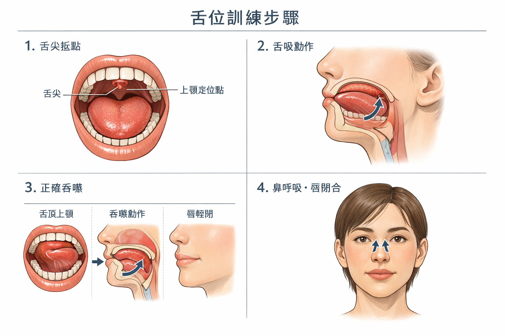
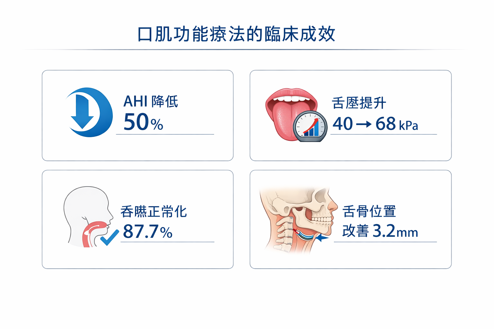

🎬 一個類比
如果你扭傷了腳踝，醫生除了讓你休息，還會建議你做物理治療——練習特定的腳踝肌肉，讓功能完全恢復，而不只是等它不痛。
口顎肌功能治療（OMT）就是口腔和臉部肌肉的「物理治療」。舌頭位置不對、吞嚥方式錯誤、嘴唇無力——這些都是肌肉功能的問題，而肌肉功能，是可以透過訓練改善的。
🎥 相關學術簡報
本主題的學術簡報
以下簡報由趙哲暘醫師整理，資料來源為同儕審查學術文獻，歡迎線上觀看或分享。
🎨 AI 視覺圖卡
圖解：口肌功能治療（OMT）是什麼？
以下圖卡由 AI 根據學術文獻自動繪製，用視覺化方式呈現 OMT 的訓練課程與臨床數據。
💪
口肌功能治療OMT視覺說明圖卡
4 張 AI 插圖圖卡 · 訓練課程與臨床數據 · 中文版
點擊開啟圖卡 →
▲ 點擊開啟 Gamma 互動圖卡 ｜ 資料來源：學術文獻整理，趙哲暘醫師審訂
🖼 醫學解說圖
口肌功能治療：視覺化關鍵說明
以下解說圖由 GPT Image 1.5 依據學術文獻繪製，呈現 OMT 訓練動作與療效數據。


圖像由 GPT Image 1.5 生成 ｜ 趙哲暘醫師審訂 ｜ 資料來源：同儕審查學術文獻
📖 基本觀念
OMT 是什麼？
OMT（Orofacial Myofunctional Therapy，口顎肌功能治療）是一套針對舌頭、嘴唇、臉頰、下顎肌肉的訓練計畫，目標是建立四個核心功能：
👃
鼻呼吸
訓練在休息和活動時，習慣使用鼻子呼吸，而不是嘴巴
👆
舌頭上位休息姿勢
訓練舌頭在休息時貼著上顎，撐開上顎、保持氣道空間
🌊
成熟的吞嚥模式
訓練吞嚥時舌頭向上推而不是向前，不用嘴唇和臉頰代償
👄
嘴唇輕閉
訓練嘴唇在休息時輕閉合，建立正確的口腔肌肉平衡
📊 研究怎麼說？
OMT 有效嗎？數字說話
50%
OSA 嚴重度改善（Camacho meta-analysis，多中心研究）
94%
舌繫帶手術 + OMT 後 AHI 改善率
顯著
成人 OMT RCT 改善（Czarnecka et al. 2025）
↑ 舌壓
IOPI 舌壓顯著提升（Mozzanica et al.）
| 研究 | 族群 | 主要結果 |
|---|---|---|
| Camacho meta-analysis | OSA 成人 | AHI 改善 50%，鼾聲降低，睡眠效率提升 |
| Czarnecka et al. 2025 RCT | 成人（逆吞嚥） | 吞嚥模式、舌頭力量、生活品質均顯著改善 |
| Mozzanica et al. | 各年齡層 | IOPI 舌壓顯著提升，與 OSA 改善相關 |
| 舌繫帶 + OMT 案例系列 | OSA + 舌繫帶沾黏 | AHI 改善達 94%（frenotomy + OMT 組合） |
🗺 治療流程
OMT 的治療是怎麼進行的？
這不是你想像中「去診所做一次就好」的治療——它更像學鋼琴：需要時間、練習和耐心，但成效是持久的。
第1步
初步評估（第 1–2 次）
評估舌頭活動度、吞嚥模式、呼吸方式、嘴唇肌力、臉部對稱性
↓
第2步
基礎訓練（1–3 個月）
舌頭上抬練習、嘴唇閉合練習、鼻呼吸訓練——建立基本的正確動作模式
↓
第3步
進階訓練（3–6 個月）
整合吞嚥模式、食物質地進阶、增加訓練強度——讓正確模式成為自動化習慣
↓
第4步
維持與複查（6–12 個月後）
確認功能維持，配合其他治療（矯正、OSA 追蹤、手術後恢復）的銜接
📅 療程時間和頻率
- 總療程：6–12 個月（視嚴重程度和個人進度）
- 診所回診：每週一次或每兩週一次（約 30–60 分鐘）
- 家庭練習：每天 10–15 分鐘（這是成功的關鍵！）
- 兒童的學習速度通常比成人快，效果也更顯著
🤝 整合照護
OMT 需要多科合作才能達到最佳效果
口顎功能問題通常不是單一問題——OMT 是核心，但需要配合其他專科：
🦷 牙科 / 矯正科
評估咬合、上顎寬度、牙齒排列；矯正治療前後配合 OMT，防止復發。擴弓治療提供硬體空間，OMT 提供軟體（肌肉）支撐。
👂 耳鼻喉科
處理腺樣體肥大、過敏性鼻炎、鼻中膈彎曲——解決鼻塞，才能讓 OMT 的鼻呼吸訓練有效執行。
😴 睡眠醫學科
診斷 OSA 嚴重程度，OMT 可輔助 PAP 治療或作為輕中度 OSA 的非侵入性治療選項。
🗣 語言治療師 / OMT 治療師
執行口顎肌功能訓練的主要專業人員。在台灣，具有 OMT 認證的語言治療師或受訓牙科專業人員均可提供。
⚠️ 單獨手術不夠
研究一再確認：
- 腺樣體切除後不做 OMT → 口呼吸習慣常常持續
- 舌繫帶手術後不做 OMT → 舌頭不會自動學會正確使用
- 矯正完成後不做 OMT → 逆吞嚥推力讓牙齒復位
- OSA 只用 PAP 不做 OMT → 肌肉張力和睡眠品質改善有限
三句話總結
- OMT 是有研究支持的治療方式——不是偏方，是被 RCT 和 meta-analysis 確認有效的，能讓 OSA 改善 50%、改善逆吞嚥、防止矯正復發。
- 它不是手術、不會痛，就像物理治療一樣，透過每天練習重建正確的肌肉功能——需要 6–12 個月，但效果持久。
- OMT 最有效的時候，是和其他治療配合的：矯正前後、手術後、OSA 治療期間——多科合作才能達到最好的長期效果。
「口顎肌功能治療就像是在
給嘴巴上體能課——
不是吃藥、不是開刀，
是訓練出來的。」
給嘴巴上體能課——
不是吃藥、不是開刀，
是訓練出來的。」
── OMT 療效系列研究摘要（Camacho；Czarnecka et al. 2025）
🧪 你適合 OMT 嗎？
快速評估：你可能需要 OMT
以下這些情況，OMT 可能對你特別有幫助：
📝 OMT 適合評估
1. 有逆吞嚥（吞嚥時嘴唇、臉頰或下巴用力，或舌頭往前推）
2. 牙齒矯正後有復發（牙縫又開了、門牙又移位）
3. 有 OSA 診斷，或嚴重打鼾
4. 有口呼吸習慣，或被告知孩子用嘴巴呼吸
5. 舌繫帶沾黏（已確認，或舌頭活動度受限）
6. NCCLs 牙頸部磨損，補了不只一次
❓ 你可能想問
關於 OMT 的疑問
在台灣要去哪裡找 OMT 治療師？+
目前台灣的 OMT 資源仍在發展中。可以透過以下管道：（1）詢問矯正科或兒童牙科醫師，他們通常能轉介；（2）醫院的語言治療科（部分語言治療師有口顎功能訓練；（3）有接受 IAOM（國際口顎肌功能組織）認證訓練的專業人員。尋找時可以問：「是否提供口顎肌功能治療？是否有逆吞嚥的訓練課程？」
OMT 的費用大概多少？健保有給付嗎？+
目前台灣健保對 OMT 的給付有限。語言治療科的評估和部分訓練可能有健保給付（若有明確的吞嚥或語言診斷）。牙科提供的 OMT 課程通常是自費，依療程長短，費用差異很大。建議諮詢時直接詢問費用結構。
大人做 OMT 效果好嗎？還是只適合孩子？+
成人做 OMT 也有顯著效果！2025 年最新的 RCT（Czarnecka et al.）就是以成人為對象的研究，確認成人 OMT 對吞嚥模式、舌頭力量和生活品質都有顯著改善。成人的優勢是自我意識強、練習更有目的性；缺點是習慣根深蒂固，可能需要更多時間改變。但無論幾歲，OMT 都值得嘗試。
OMT 和一般語言治療有什麼不同？+
一般語言治療主要聚焦在語言、語音和溝通（如構音問題、失語症）。OMT 則專注在口顎肌肉的功能訓練——舌頭位置、吞嚥模式、呼吸習慣、嘴唇肌力。雖然有重疊（語言治療師可以受訓提供 OMT），但 OMT 的評估和訓練框架是獨立的專業領域，需要特別的訓練才能提供。
OMT 訓練後，效果能維持多久？+
如果訓練完成、新的肌肉習慣真的建立起來，效果通常是持久的——因為這已經變成你的「預設動作」，像學會騎腳踏車一樣，不容易忘記。研究顯示，OMT 完成後追蹤 2–4 年，大多數人仍維持改善的吞嚥模式和 OSA 指數。但如果只做了一半就停，或沒有真正建立習慣，復發的機率較高。
📥 學術文件下載
本章學術整理文件
本頁所有數據均來自以下學術整理文件。歡迎下載完整版本，包含論文引用、量化數據與完整研究說明。
🔗 延伸閱讀